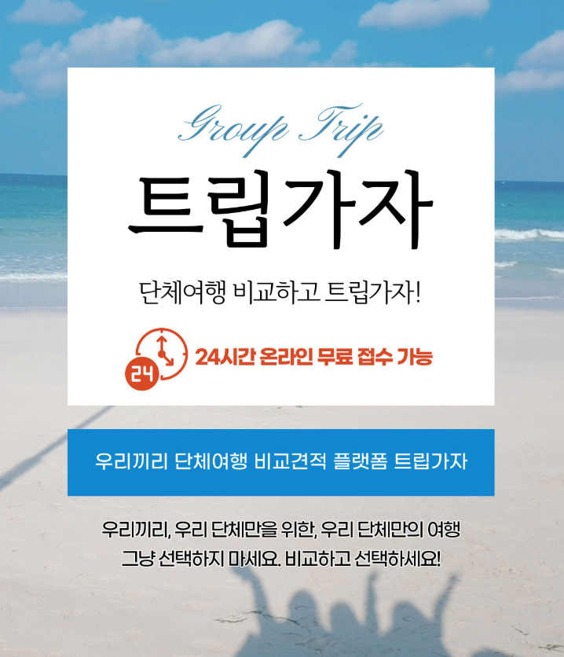
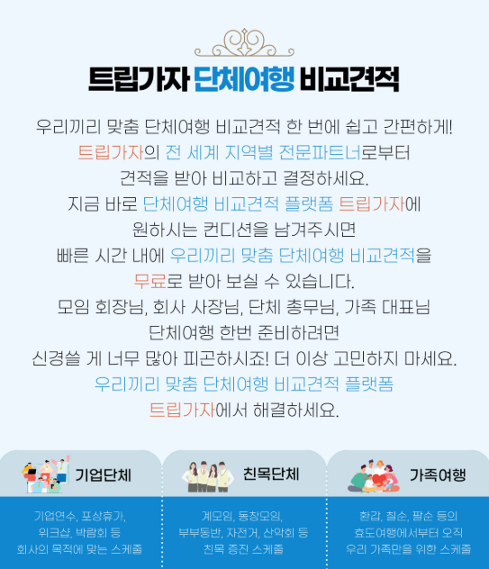
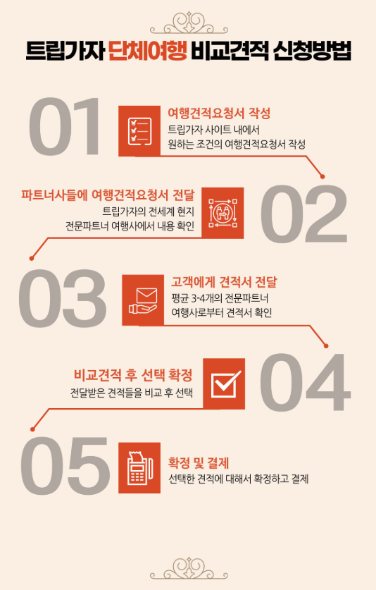
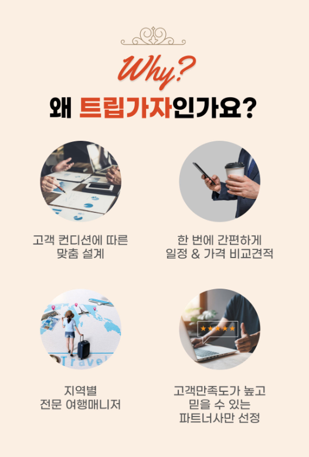

트립가자를 포함한 여행 서비스를 알아볼 때는 가장 저렴하게 표시된 상품만 고르기보다 실제 여행에서 이용하게 될 항공과 숙소, 일정, 식사와 현지 비용을 함께 비교해야 합니다. 출발 가능한 날짜와 인원, 예산과 원하는 여행방식을 먼저 정리한 뒤 상품 조건을 같은 기준으로 확인하면 선택이 한결 쉬워집니다.
트립가자를 알아볼 때 먼저 정할 여행 조건
여행 상품을 알아볼 때는 목적지만 먼저 정하기보다 출발 가능 날짜, 여행 인원, 예산, 숙박 수준과 원하는 일정 방식을 함께 정리하는 것이 좋습니다. 같은 지역을 여행하더라도 자유시간의 비중과 포함 일정, 숙소 위치, 이동수단에 따라 실제 만족도가 크게 달라질 수 있습니다. 트립가자 정보를 확인하기 전 우선순위를 정리하면 상품을 비교하기가 훨씬 쉬워집니다.

패키지여행과 자유여행 중 어떤 방식이 맞을까요?
패키지여행은 교통과 숙소, 주요 관광 일정이 한 번에 구성되어 있어 준비 부담을 줄이기 좋습니다. 자유여행은 원하는 장소와 시간을 직접 정할 수 있다는 장점이 있지만 항공권과 숙소, 현지 교통을 따로 준비해야 합니다. 처음 방문하는 지역이거나 이동이 복잡하다면 패키지가 편리할 수 있고, 일정 조절과 개별 취향을 중요하게 생각한다면 자유여행이 더 잘 맞을 수 있습니다.
표시된 여행가격에 무엇이 포함됐는지 확인하세요
여행 상품의 표시가격에는 항공권과 숙소, 일부 식사와 관광 일정이 포함될 수 있지만 유류할증료, 현지 선택관광, 가이드·기사 경비, 개인 경비가 별도로 안내되는 경우도 있습니다. 처음 보이는 가격만으로 판단하지 말고 최종적으로 지출할 수 있는 전체 비용을 정리해야 합니다.
출발일과 항공 일정이 여행 만족도에 미치는 영향
같은 여행기간이라도 출발시간과 귀국시간에 따라 현지에서 실제로 머무는 시간이 달라질 수 있습니다. 늦은 출발과 이른 귀국 일정은 표면상 여행일수보다 활용 가능한 시간이 짧을 수 있습니다. 직항 여부와 경유시간, 수하물 포함 기준도 함께 확인하는 것이 좋습니다.
숙소는 등급보다 위치와 이동 편의성을 함께 보세요
호텔 등급이 높아도 주요 관광지에서 멀리 떨어져 있다면 이동시간이 길어질 수 있습니다. 숙소 이름과 실제 위치, 객실 형태, 조식 포함 여부와 주변 편의시설을 확인하세요. 연박인지 매일 숙소를 옮기는지도 여행 피로도에 영향을 줄 수 있습니다.
| 비교 항목 | 확인할 내용 | 체크 이유 |
|---|---|---|
| 항공 일정 | 직항·경유, 출발·귀국시간 | 실제 현지 체류시간 확인 |
| 숙소 | 등급, 위치, 객실과 조식 | 이동 편의와 추가비용 확인 |
| 여행 일정 | 포함관광, 자유시간, 쇼핑 | 원하는 여행방식과 비교 |

포함 일정과 자유시간의 비율을 확인하세요
관광 일정이 많으면 여러 장소를 효율적으로 볼 수 있지만 이동과 단체 일정이 촘촘할 수 있습니다. 반대로 자유시간이 많으면 개인 취향대로 여행할 수 있지만 현지 교통과 식사 준비가 필요합니다. 본인이 원하는 여행 속도에 맞는 구성을 선택하는 것이 중요합니다.
선택관광과 쇼핑 일정도 미리 살펴보세요
일부 상품은 기본 일정 외에 추가비용이 필요한 선택관광이 포함될 수 있습니다. 선택관광 참여 여부와 비용, 참여하지 않을 때 대기 장소나 대체 일정이 어떻게 되는지 확인하세요. 쇼핑센터 방문 횟수와 체류시간도 일정 만족도에 영향을 줄 수 있습니다.
여행 인원과 객실 사용 조건
성인과 아동의 인원 구성, 객실당 사용 인원에 따라 가격이 달라질 수 있습니다. 혼자 여행할 때는 싱글차지가 발생할 수 있고, 세 명 이상이 한 객실을 이용하면 엑스트라베드가 제공될 수 있습니다. 가족여행이라면 아동 침대와 조식, 연결 객실 가능 여부를 확인하는 것이 좋습니다.
예약금과 잔금 납부 조건
여행 상품은 예약 시 예약금을 납부하고 출발 전 정해진 시점까지 잔금을 결제하는 방식이 많습니다. 예약금 납부기한과 잔금일, 카드결제 가능 여부를 확인하세요. 예약만 해두고 납부기한을 놓치면 예약이 취소될 수 있습니다.

취소수수료와 일정 변경 조건
여행은 항공권과 숙소를 미리 확보하기 때문에 출발일이 가까워질수록 취소수수료가 커질 수 있습니다. 개인 사정으로 일정이 바뀔 가능성이 있다면 취소 규정과 여행자 변경 가능 여부, 항공권 발권 이후의 수수료를 계약 전에 확인해야 합니다.
여권과 비자, 입국 조건 확인
해외여행은 여권 유효기간과 비자 필요 여부를 확인해야 합니다. 국가에 따라 입국 시 요구되는 여권 잔여기간이나 전자여행허가, 왕복 항공권과 숙소 정보가 다를 수 있습니다. 출발 직전에 확인하기보다 예약 단계에서 준비하는 것이 안전합니다.
여행자보험과 현지 안전 준비
여행 중 발생할 수 있는 질병과 상해, 휴대품 손해와 항공 지연에 대비해 여행자보험의 보장범위를 확인하는 것이 좋습니다. 현지 긴급연락처와 숙소 주소, 여행사 연락처를 휴대전화뿐 아니라 별도로 기록해두면 도움이 됩니다.
현지 경비와 선택관광, 쇼핑 일정, 수하물과 객실 추가비용까지 합산해야 실제 여행비용을 알 수 있습니다.
출발 전 준비물 체크리스트
여권과 항공 일정표, 숙소 정보, 결제수단과 환전, 충전기와 어댑터, 상비약을 준비하세요. 날씨와 현지 문화에 맞는 복장을 확인하고 수하물 무게 제한도 점검해야 합니다. 중요한 서류는 휴대전화와 이메일에 복사본을 보관하는 것이 좋습니다.
트립가자 최종 비교 전 확인사항
희망 목적지와 날짜, 여행 인원과 예산을 기준으로 항공 일정, 숙소 위치, 포함 식사와 관광, 선택관광, 쇼핑 일정과 취소 규정을 표로 정리하세요. 상품명이 비슷하더라도 세부 조건이 다를 수 있으므로 최종 예약 페이지의 안내 내용을 다시 확인하는 것이 중요합니다.
